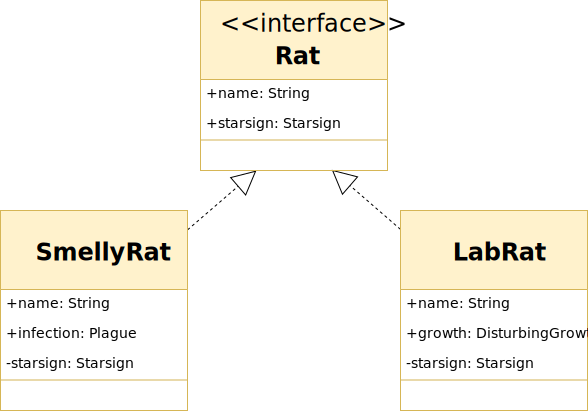
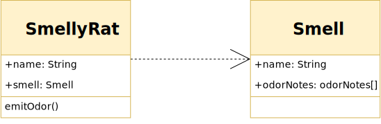

ℹ️ Purpose: Planing object orientated programs by showing object relationships
Relationships
Inheritance:
Each SmellyRat is an instance of an Animal. A SmellyRat will have the usual things Animals have (like a heart, brain) but a SmellyRat adds its own character: Smell, indefinable ratness, fur.
Association
Bidirectional:

Both classes have a association with each other. The opposite end of the connection describes the relationship with roles: SmellyRat is a resident, Sewer is a home, and multiplicity: There are potentially 1 to many * SmellyRats residing a Sewer, and just 1 Sewer is home for to a SmellyRat.
Uni-directional:
Only one class needs to know about the other. A Plague does not reference a SmellyRat specifically in its implementation. A but the SmellyRat's public Infection is a Plague type (sounds serious).
Interface:
SmellyRat and LabRat are implementations of a Rat.
Aggregation:

An implant is a part of a LabRat but is not necessarily destroyed when the LabRat is. Another example: A Car with 4 Wheels. The Wheels are parts of the car but can live outside it independently.
Composition:

A StrangeGrowth cannot exist without a LabRat. Like the aggregation, a LabRat can have many StrangeGrowth parts but if the LabRat parent goes so do the StrangeGrowth instances (poor Rat).
Dependency:
SmellyRat depends on the API of Smell. To emitOdor a SmellyRat accesses the properties of a Smell. If Smell changes, SmellyRat might have to also.
References
https://developer.ibm.com/articles/the-class-diagram/
https://en.wikipedia.org/wiki/Class_diagram